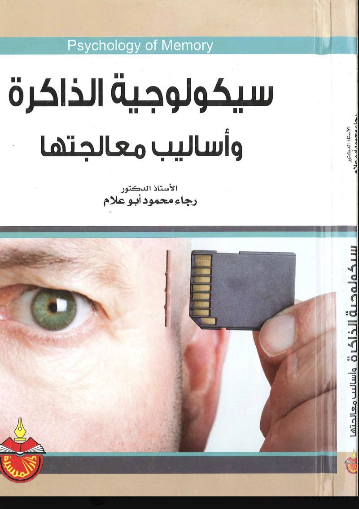
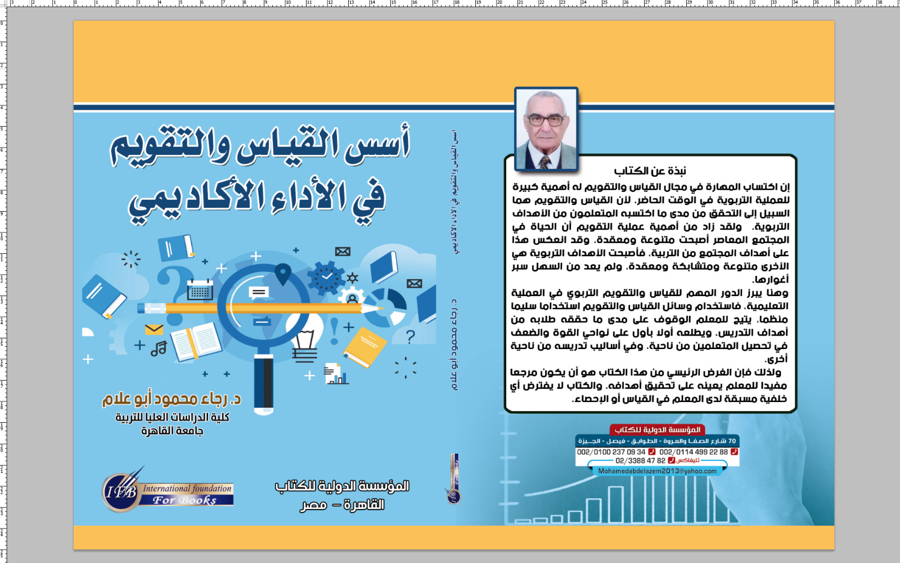
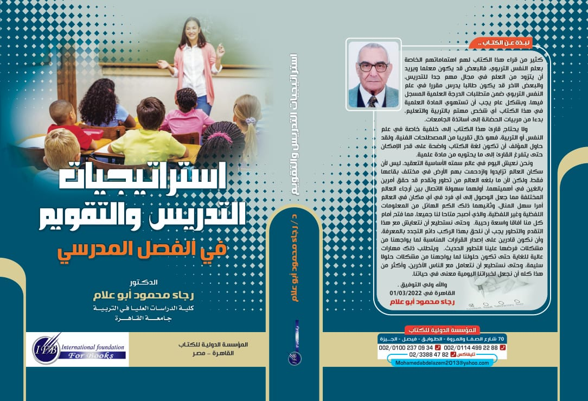
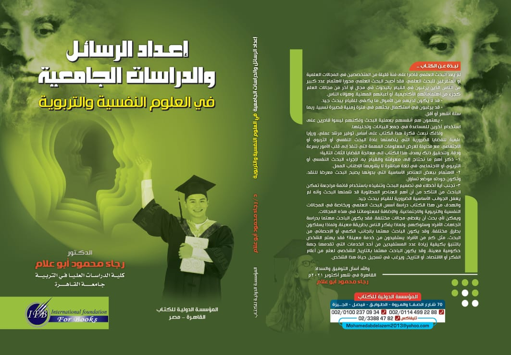
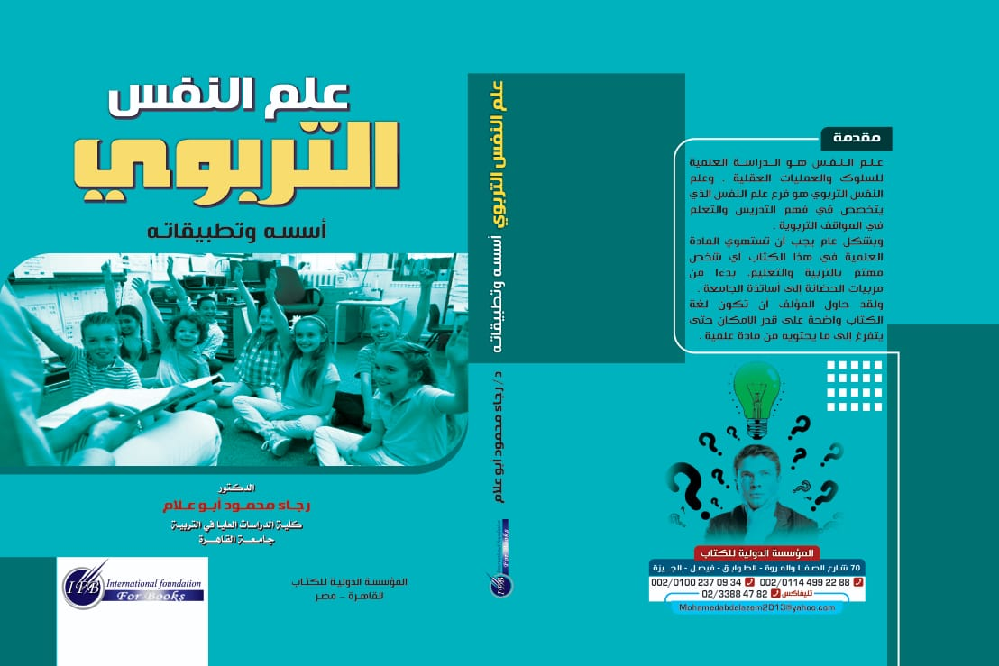
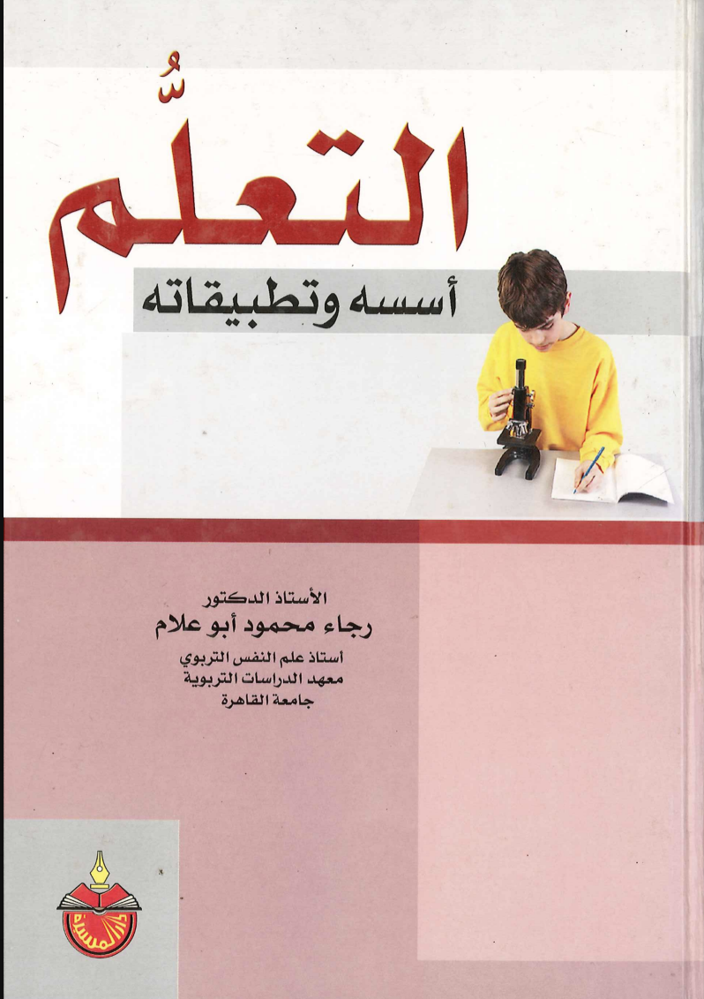
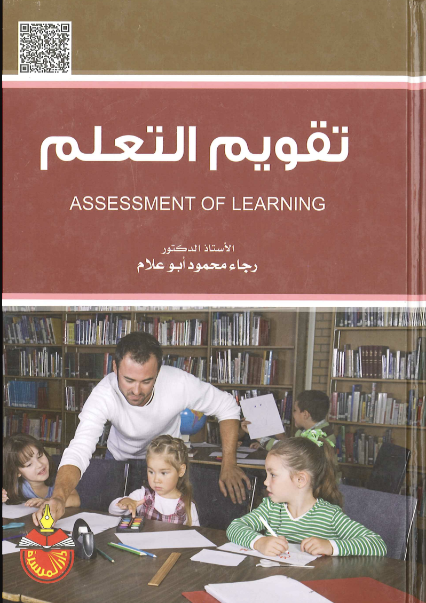

مناهج البحث في العلوم النفسية والتربوية
المرجع التأسيسي الأوسع انتشاراً لطلبة الدراسات العليا في تأصيل الاستقصاء العلمي، وضبط المتغيرات الدخيلة، والتصميمات التجريبية وشبه التجريبية، وإعداد مخططات الماجستير والدكتوراه.

التحليل الإحصائي للبيانات باستخدام برنامج SPSS
دليل تطبيقي متكامل يركز على تمكين الباحث من إدخال البيانات، واختبار الفروض المعلمية واللامعلمية، وقراءة وتفسير جداول مخرجات SPSS الإحصائية لرسائل الماجستير والدكتوراه.

سيكولوجية الذاكرة وأساليب معالجتها
كتاب تخصصي في علم النفس المعرفي يشرح آليات عمل الذاكرة ونماذج تجهيز المعلومات، مراحل الاكتساب والتخزين والاسترجاع، مع استراتيجيات تطبيقية لعلاج النسيان وتدعيم الذاكرة.

أسس القياس والتقويم في الأداء الأكاديمي
مرجع موجه للمعلمين وأعضاء هيئة التدريس للتحقق من اكتساب المتعلمين للأهداف التربوية المنشودة، والوقوف على نواحي القوة والضعف، دون افتراض خلفية مسبقة في الرياضيات أو الإحصاء.

استراتيجيات التدريس والتقويم في الفصل المدرسي
عمل حديث يدمج أحدث استراتيجيات علم النفس التربوي مع أساليب التدريس الصفي والتقويم المستمر لمواكبة عصر الانفجار المعرفي وصقل مهارات اتخاذ القرار لدى المتعلمين.

إعداد الرسائل والدراسات الجامعية في العلوم النفسية والتربوية
المرجع العملي المباشر لطلاب الدراسات العليا؛ يضع بين أيديهم قوائم مراجعة دقيقة لخطوات البحث لتجنب الأخطاء الشائعة وضمان جودة الأطروحة وفق معايير التحكيم العلمي.

علم النفس التربوي: أسسه وتطبيقاته
كتاب منهجي رصين يفسر العمليات العقلية والسلوكية المرتبطة بالمواقف التربوية؛ مكتوب بلغة علمية دقيقة خالية من الحشو الاصطلاحي لخدمة المعلم والأستاذ الجامعي.
مناهج البحث الكمية والنوعية والمختلطة
أحد أوائل المراجع العربية التي أصلت منهجية "المناهج المختلطة" (Mixed-Methods)، مبيناً آليات الدمج الإمبريقي بين التحليل الإحصائي الرقمي والتحليل الاستقرائي الكيفي.

التعلم: أسسه وتطبيقاته
دراسة موسعة ومقارنة تستعرض أركان نظريات التعلم الكبرى (السلوكية، المعرفية، والبنائية)، مبيناً كيفية توظيف مبادئ التعزيز ومعالجة المعلومات داخل الحجرة الصفية.

تقويم التعلم
دليل تطبيقي متقدم في بناء واستخدام أدوات التقويم الصفي، ومقاييس نواتج التعلم المعرفية والوجدانية، واستراتيجيات التقويم البديل والواقعي في المدارس.
القياس والتقويم في العلوم الإنسانية: أسسه وأدواته وتطبيقاته
مصنف أكاديمي شامل يغطي نظرية القياس النفسي والتربوي، وأدوات قياس الشخصية والاتجاهات، وتحليل بنود الاختبارات، واستخراج مؤشرات الصدق والثبات.
قياس وتقويم التحصيل الدراسي
عمل تأسيسي في تقويم المخرجات التعليمية المدرسية، صياغة جدول المواصفات، وتدريج الفقرات الاختبارية بما يضمن عدالة وموثوقية التقديرات الدراسية.
الفروق الفردية وتطبيقاتها التربوية
مرجع رائد يعالج توزيع القدرات والاستعدادات والسمات الشخصية بين المتعلمين، وأسس تفريد التعليم وتصميم برامج رعاية المتفوقين وذوي الاحتياجات الخاصة.
مدخل إلى مناهج البحث التربوي
كتاب منهجي مدخلي موجّه لطلبة كليات التربية والدبلومات المهنية؛ ييسر مفاهيم المشكلة البحثية، أدوات جمع البيانات، الاستبيانات، والملاحظة المنظمة.
القلق وأمراض الجسم
دراسة تخصصية مبكرة ومحكمة في علم النفس الإكلينيكي والصحة النفسية؛ تبحث في الاضطرابات السيكوسوماتية وتأثير الضغوط النفسية والقلق المزمن على وظائف الجسد.
لم يتم العثور على كتب مطابقة
جرّب البحث بكلمة أو تصنيف آخر من القائمة أعلاه.